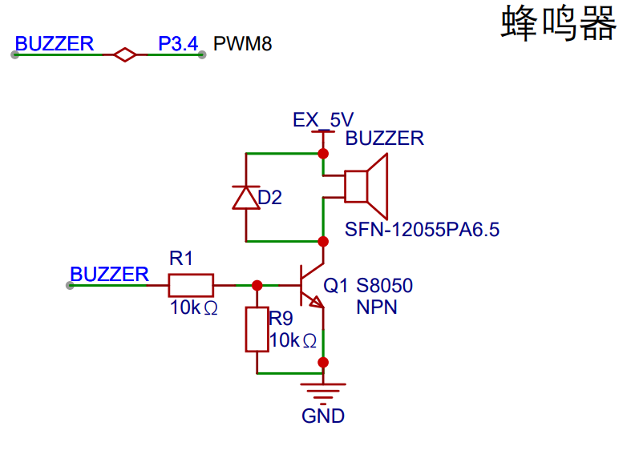
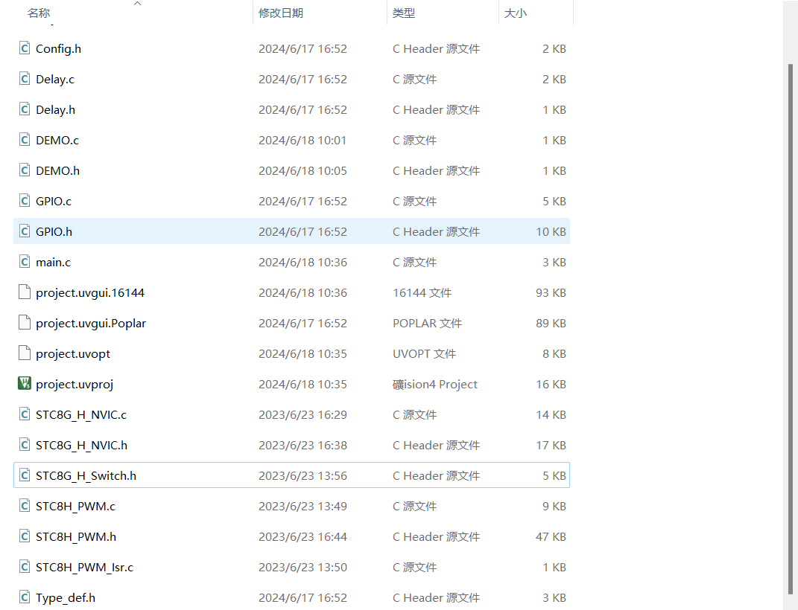

<!DOCTYPE lake>
<h3 data-lake-id="M8opz" id="M8opz"><span data-lake-id="uf7a161df" id="uf7a161df">蜂鸣器</span></h3><p data-lake-id="u948147ac" id="u948147ac"><span data-lake-id="u77c0a738" id="u77c0a738">蜂鸣器是一种能够产生固定频率的声音的电子元件。它通常由振膜、震荡器、放大器和声音反馈电路等部分组成。振膜是蜂鸣器中最核心的部分，它能够将电信号转换为机械振动，产生声音。震荡器提供稳定的电信号，用于驱动振膜产生振动。放大器用于放大电信号的幅度，以便产生足够的声音。声音反馈电路可以提供反馈信号，帮助系统稳定。</span></p><p data-lake-id="u909ab21e" id="u909ab21e"><span data-lake-id="u715c0f1f" id="u715c0f1f">蜂鸣器广泛应用于电子设备中，例如电子钟、警报器、电子琴等。它们的声音频率通常在1 kHz到10 kHz之间，具有尖锐而刺耳的特点。蜂鸣器的种类很多，例如电磁式蜂鸣器、压电式蜂鸣器、有源蜂鸣器、无源蜂鸣器等等。不同类型的蜂鸣器具有不同的特点和应用场景。</span></p><p data-lake-id="u2408d485" id="u2408d485"><span data-lake-id="u49b88114" id="u49b88114">电子爱好者和开发者通常会使用蜂鸣器作为一种简单而有效的提示器件。例如，在嵌入式系统中，可以通过控制蜂鸣器发出不同的声音来实现提示、警报、提醒等功能。一些开发板和单片机也通常带有蜂鸣器接口，方便开发者使用。</span></p><p data-lake-id="ud94d503c" id="ud94d503c"><span data-lake-id="u89483a6e" id="u89483a6e">通常我们在开发中用到最多的是 有源蜂鸣器和无源蜂鸣器。有源的直接接电源即可发声。无源的需要连接一个变化频率的电源上，才能发出声音。</span></p><h3 data-lake-id="Lqfrx" id="Lqfrx"><span data-lake-id="ucaddd080" id="ucaddd080">原理图</span></h3><p data-lake-id="u5cd0bd5a" id="u5cd0bd5a"><span data-lake-id="ub6c21dac" id="ub6c21dac">使用引脚是P3.4-PWM8</span></p><p data-lake-id="ub4a652f3" id="ub4a652f3"></p><p data-lake-id="ucff7aca8" id="ucff7aca8"><strong><span data-lake-id="u2d10a3e4" id="u2d10a3e4">肖特基二极管：</span></strong></p><p data-lake-id="u9863dbb3" id="u9863dbb3"><span data-lake-id="ucc04390b" id="ucc04390b">当蜂鸣器在工作时，会产生电磁感应。</span></p><p data-lake-id="u86dd0fa3" id="u86dd0fa3"><span data-lake-id="u05e79199" id="u05e79199">当电源关闭或蜂鸣器停止振动时，会产生一个瞬态的电压峰值，这会产生反向电流，可能会对电路及蜂鸣器造成损害或影响其寿命。肖特基二极管可以通过其低的正向电压降和快速反向恢复特性，有效地防止反向电流损害电路。</span></p><p data-lake-id="u9e29dcdb" id="u9e29dcdb"><span data-lake-id="u84e479bb" id="u84e479bb">此外，肖特基二极管的快速开关特性也能够减小蜂鸣器电路中的开关噪声和干扰，提高电路的稳定性和可靠性。因此，在蜂鸣器电路中加入肖特基二极管是一种常见的电路保护和稳定化措施。</span></p><h4 data-lake-id="zDAUb" id="zDAUb"><span data-lake-id="ub410fa29" id="ub410fa29">肖特基二极管的作用</span></h4><ol list="u1cc74c13"><li data-lake-id="u0b0f72fe" fid="u1e9c28bc" id="u0b0f72fe"><span data-lake-id="u25ca681f" id="u25ca681f">快速开关：肖特基二极管具有快速的反向恢复特性，可以快速地从导通到截止转变，因此它通常用于高频开关电路中。</span></li><li data-lake-id="u22130f04" fid="u1e9c28bc" id="u22130f04"><span data-lake-id="u28d05a98" id="u28d05a98">低正向压降：与普通二极管相比，肖特基二极管具有更低的正向电压降，因此在需要低功耗和高效率的电路中使用时，肖特基二极管可以降低电路中的功耗和热损失。</span></li><li data-lake-id="u592bf9f9" fid="u1e9c28bc" id="u592bf9f9"><span data-lake-id="uc62c1bb3" id="uc62c1bb3">防反向漏电流：由于肖特基二极管是由金属和半导体接触组成的，因此在正向偏置时，不会发生少数载流子注入的现象，从而降低了漏电流。</span></li><li data-lake-id="u6ecfffc7" fid="u1e9c28bc" id="u6ecfffc7"><span data-lake-id="u88f39681" id="u88f39681">温度特性好：由于金属与半导体接触，所以肖特基二极管具有良好的温度特性。在高温环境下，肖特基二极管的电性能仍能保持稳定。</span></li></ol><p data-lake-id="ud15288cd" id="ud15288cd"><span data-lake-id="ub2f4d748" id="ub2f4d748">因此，肖特基二极管在高频开关电路、低功耗电路和功率电子等领域中得到了广泛的应用。</span></p><p data-lake-id="u246e1998" id="u246e1998"><strong><span data-lake-id="u4a9d724d" id="u4a9d724d">测试发声</span></strong></p><span class="yuque-card-unsupported">[codeblock]</span><h4 data-lake-id="rUdCl" id="rUdCl"><span data-lake-id="u93f29d99" id="u93f29d99">代码实现（使用pwm操作蜂鸣器）</span></h4><p data-lake-id="u05338dc4" id="u05338dc4"><span data-lake-id="uea95d3fe" id="uea95d3fe">1.将</span><code data-lake-id="u89777842" id="u89777842"><span data-lake-id="u9dd9d071" id="u9dd9d071">STC8G_H_PWM.H</span></code><span data-lake-id="u4d4743a3" id="u4d4743a3">,</span><code data-lake-id="u4a40fc7a" id="u4a40fc7a"><span data-lake-id="u075b38cc" id="u075b38cc">STC8G_H_Switch.H</span></code><span data-lake-id="ue6f7e6be" id="ue6f7e6be">，</span><code data-lake-id="uf362345f" id="uf362345f"><span data-lake-id="ub87ed371" id="ub87ed371">STC8G_H_nvic.H</span></code><span data-lake-id="u052c9f7c" id="u052c9f7c">,</span><code data-lake-id="u6f465bc8" id="u6f465bc8"><span data-lake-id="u1236e185" id="u1236e185">STC8G_H_PWM.C</span></code><span data-lake-id="ub41a96ae" id="ub41a96ae">,</span><code data-lake-id="u36addb75" id="u36addb75"><span data-lake-id="u63ad9e0f" id="u63ad9e0f">STC8G_H_Switch.C</span></code><span data-lake-id="u55bdeea6" id="u55bdeea6">，</span><code data-lake-id="u5cf4b6a6" id="u5cf4b6a6"><span data-lake-id="u30e75a17" id="u30e75a17">STC8G_H_nvic.C</span></code><span data-lake-id="uad7d17b2" id="uad7d17b2">,</span><code data-lake-id="ub51cbabe" id="ub51cbabe"><span data-lake-id="u457cb9d4" id="u457cb9d4">STC8H_PWM_Isr.c</span></code><span data-lake-id="ubda56ab0" id="ubda56ab0">放到底层文件夹</span></p><p data-lake-id="ufda77dcf" id="ufda77dcf"></p><p data-lake-id="u8d8aed86" id="u8d8aed86"><span data-lake-id="uc6839604" id="uc6839604">2.代码实现</span></p><span class="yuque-card-unsupported">[codeblock]</span><p data-lake-id="u4f75a334" id="u4f75a334"><strong><span class="lake-fontsize-16" data-lake-id="u84fd6aed" id="u84fd6aed">进阶操作</span></strong></p><p data-lake-id="uc48e57fa" id="uc48e57fa"><span data-lake-id="u307da4c3" id="u307da4c3">使用pwm实现“哆来咪发唆拉西哆”</span></p><span class="yuque-card-unsupported">[codeblock]</span>